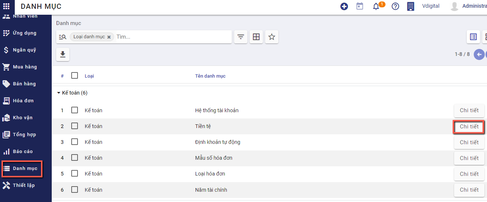
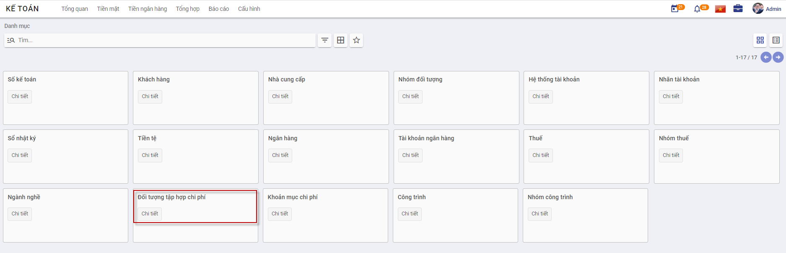
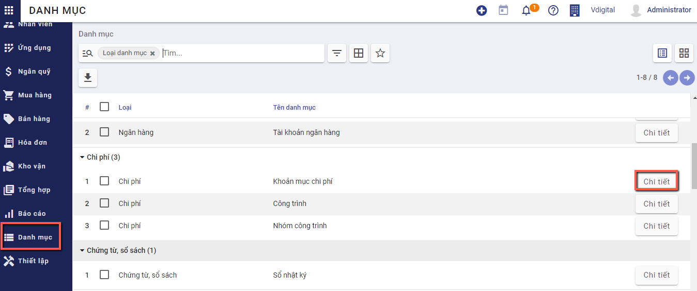
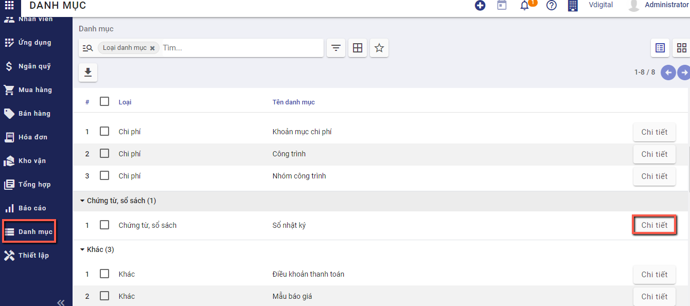
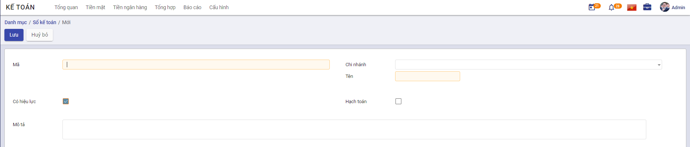

Khai báo danh mục
Thực hiện hướng dẫn về các Danh mục cần khai báo trên ứng dựng Kế toán. Việc khai báo các Danh mục có thể được thực hiện tại bất kỳ thời điểm nào tùy thuộc người sử dụng: có thể trước thời điểm nhập chứng từ hay thực hiện được ngay tại thời điểm nhập chứng từ.
Đối tượng
Nhóm đối tượng
Mục đích
Quản lý thông tin về các nhóm đối tượng khác nhau, phục vụ cho việc quản lý danh sách khách hàng và nhà cung cấp của doanh nghiệp.
Chức năng Danh mục Nhóm đối tượng được quản lý tập trung tại phần Danh mục
Các bước thực hiện
- Vào phân hệ Kế toán; chọn chức năng Danh mục: chọn Nhóm đối tượng và nhấn nút Chi tiết

Thông tin Danh mục Nhóm đối tượng được hiển thị để người dùng khai báo
- Để khai báo thêm Nhóm người dùng, người dùng nhấn nút TạoTrên màn hình Nhóm người dùng và thực hiện Khai báo các thông tin:
- Mã nhóm: Không trùng với Mã đã khai báo
-
Tên nhóm: Thông tin để quản lý
-
Nhấn nút Lưu
Khách hàng
Mục đích
Chức năng này cho phép người dùng khai báo các Khách hàng của Công ty. Thực hiện Quản lý danh sách các khách hàng, phục vụ cho việc lập và hạch toán các chứng từ kế toán liên quan đến hoạt động bán hàng, hóa đơn.
Chức năng Danh mục Khách hàng được quản lý tập trung tại phần Danh mục của Phân hệ Kế toán
Các bước thực hiện
- Vào phân hệ Kế toán; chọn chức năng Cấu hình\Danh mục: chọn Khách hàng và nhấn nút Chi tiết
Thông tin Danh mục Khách hàng được hiển thị để người dùng khai báo
- Để khai báo thêm thông tin Khách hàng, người dùng nhấn nút TạoTrên màn hình Khách hàng và thực hiện Khai báo các thông tin:
- Lựa chọn Đối tượng Khách hàng là Cá nhân hay Công ty ; Hai đối tượng sẽ có bổ sung thêm 1 số thông tin tương ứng.
- Ngoài thông tin chung: Danh mục Khách hàng cũng quản lý thông tin về: Cách thức liên lạc, thông tin khi có phát sinh Giao dịch bán hàng và Mua hàng, Hóa đơn
- Nội dung khai báo tại Lên hóa đơn:
- Thông tin Ngân hàng và Số tài khoản: Doanh nghiệp có giao dịch Mua hàng/Bán hàng với Khách hàng và thực hiện Thanh toán: thông tin Số tài khoản đã khai báo sẽ được hiển thị để Kế toán thực hiện chọn và Thanh toán

- Nhấn nút Lưu
Lưu ý:
- Tại Danh mục Khách hàng: có thể theo dõi được các Giao dịch về Mua hoặc Bán đã thực hiện với từng Khách hàng, cũng như Công nợ giữa Doanh nghiệp và Khách hàng
- Khi nhấn vào các Đầu mục theo dõi, hệ thống tự động Truy vết các Giao dịch gắn đã thực hiện với Khách hàng
Nhà cung cấp
Mục đích
Quản lý danh sách các nhà cung cấp, phục vụ cho việc lập và hạch toán các chứng từ kế toán liên quan đến hoạt động mua hàng hoá, dịch vụ.
Các bước thực hiện
- Vào phân hệ Kế toán; chọn chức năng Danh mục: chọn Nhà cung cấp và nhấn nút Chi tiết

Thông tin Nhà cung cấp được hiển thị để người dùng khai báo
-
Để khai báo thêm thông tin Nhà cung cấp, người dùng nhấn nút TạoTrên màn hình Nhà cung cấp và thực hiện Khai báo các thông tin:
-
Lựa chọn Đối tượng Nhà cung cấ là Cá nhân hay Công ty ; Hai đối tượng sẽ có bổ sung thêm 1 số thông tin tương ứng.
- Ngoài thông tin chung: Danh mục Nhà cung cấp cũng quản lý thông tin về: Cách thức liên lạc, thông tin khi có phát sinh Giao dịch bán hàng và Mua hàng, Hóa đơn
- Nội dung khai báo tại Lên hóa đơn:
- Thông tin Ngân hàng và Số tài khoản: Doanh nghiệp có giao dịch Mua hàng với Nhà cung cấp và thực hiện Thanh toán: thông tin Số tài khoản đã khai báo sẽ được hiển thị để Kế toán thực hiện chọn và Thanh toán
- Nhấn nút Lưu
Lưu ý:
- Tại Danh mục Nhà cung cấp: có thể theo dõi được các Giao dịch về Mua hàng hóa dịch vụ đã thực hiện với từng Nhà cung cấp, cũng như Công nợ giữa Doanh nghiệp và Nhà cung cấp
- Khi nhấn vào các Đầu mục theo dõi, hệ thống tự động Truy vết các Giao dịch gắn đã thực hiện với Khách hàng
Hàng hóa vật tư
Nhóm sản phẩm
Mục đích
Hệ thống đã thiết lập sẵn danh sách một số danh mục nhóm vật tư, hàng hoá, phục vụ cho việc quản lý vật tư, hàng hoá của doanh nghiệp. Tuy nhiên, Kế toán của Doanh nghiệp vẫn có thể bổ sung, sửa đổi lại nhóm vật tư, hàng hoá sao cho phù hợp với nhu cầu quản lý thực tế tại doanh nghiệp.
Chức năng Danh mục Nhóm sản phẩm được quản lý tập trung tại phần Danh mục
Các bước thực hiện
- Vào phân hệ Mua hàng; chọn chức năng Cấu hình\Danh mục: chọn Nhóm sản phẩm và nhấn nút Chi tiết
Thông tin Nhóm sản phẩm được hiển thị để người dùng khai báo

- Để khai báo thêm Nhóm người dùng, người dùng nhấn nút TạoTrên màn hình Nhóm sản phẩm và thực hiện Khai báo các thông tin:

- Nhấn nút Lưu
Lưu ý:
- Nhấn Sửa: Nếu muốn thay đổi thông tin Nhóm sản phẩm đã khai báo
- Với các Nhóm sản phẩm không có nhu cầu theo dõi tiếp, sử dụng chức năng Sửa và Bỏ chọn 'Có hiệu lực'
Kho
Mục đích
Quản lý danh sách các kho vật tư, hàng hoá, phục vụ cho công tác khai báo vật tư, hàng hoá trong doanh nghiệp.
Chức năng Danh mục Kho được quản lý tập trung tại phần Danh mục của Phân hệ Kho vận
Các bước thực hiện
- Vào phân hệ Kho vận; chọn chức năng Cấu hình: chọn Kho hàng
- Để khai báo thêm Kho hàng, người dùng nhấn nút TạoTrên màn hình Kho hàng và thực hiện Khai báo các thông tin:

- Nhấn nút Lưu
Lưu ý:
- Nhấn Sửa: Nếu muốn thay đổi thông tin Nhóm sản phẩm đã khai báo
Kế toán
Hệ thống tài khoản
Mục đích
Quản lý toàn bộ thông tin Tài khoản của Doanh nghiệp sử dụng hệ thống Kế toán.
Hệ thống đã thiết lập sẵn hệ thống tài khoản theo đúng chế độ kế toán đã được chọn khi Cài đặt và chọn Chế độ kế toán tại thời điểm đầu. Kế toán doanh nghiệp vẫn có thể bổ sung, sửa đổi hoặc xóa bỏ các tài khoản đã có để phù hợp với yêu cầu quản lý thực tế của doanh nghiệp.
Chức năng Danh mục Hệ thống tài khoản được quản lý tập trung tại phần Danh mục của phân hệ Kế toán
Các bước thực hiện
- Vào phân hệ Kế toán; chọn chức năng Cấu hình\Danh mục: chọn Hệ thống tài khoản và nhấn nút Chi tiết
Thông tin Hệ thống tài khoản được hiển thị để người dùng khai báo

- Để khai báo thêm Nhóm người dùng, người dùng nhấn nút Tạo trên màn hình Hệ thống tài khoản và thực hiện Khai báo các thông tin:

- Sau khai báo về Mã và Tên tài khoản; người dùng thực hiện Thiết lập thông tin cho tài khoản đã khai
- Việc thiết lập sẽ liên quan đến toàn bộ luồng dữ liệu hạch toán về sau của 1 tài khoản

- Nhấn nút Lưu
Lưu ý:
- Nhấn Sửa: Nếu muốn thay đổi thông tin Tài khoản đã khai báo
- Với các Tài khoản không có nhu cầu theo dõi tiếp, sử dụng chức năng Sửa và Bỏ chọn 'Có hiệu lực'
Tiền tệ
Mục đích
Quản lý toàn bộ thông tin Tiền tệ của Doanh nghiệp sử dụng hệ thống Kế toán.
Hệ thống đã thiết lập sẵn các Loại Tiền tệ trên thị trường. Muốn sử dụng Loại tiền nào thì Kế toán vào chuyển trạng thái Hiệu lực và khai báo thông tin Tỷ giá cho Loại tiền theo đúng thực tế.
Chức năng Danh mục Tiền tệ được quản lý tập trung tại phần Danh mục của phân hệ Kế toán
Các bước thực hiện
- Vào phân hệ Kế toán; chọn chức năng Cấu hình\Danh mục: chọn Tiền tệ và nhấn nút Chi tiết

Thông tin Tiền tệ được hiển thị để người dùng khai báo

- Để đưa vào hoạt động Loại tiền tệ đã có, người dùng chọn thông tin Tiền tệ đó và nhấn nút Sửa trên màn hình Tiền tệ và thực hiện Cập nhật các thông tin:

- Nhấn nút Lưu
Lưu ý:
- Với các Tiền tệ không có nhu cầu theo dõi tiếp, sử dụng chức năng Sửa và Bỏ chọn 'Có hiệu lực'
Ngân hàng
Ngân hàng
Mục đích
Hệ thống đã thiết lập sẵn danh sách các ngân hàng thường được các doanh nghiệp lựa chọn. Tuy nhiên, Kế toán của Doanh nghiệp vẫn có thể bổ sung, sửa đổi hoặc xóa bỏ các ngân hàng đã có sao cho phù hợp với yêu cầu quản lý thực tế của doanh nghiệp.
Chức năng Danh mục Ngân hàng được quản lý tập trung tại phần Danh mục
Các bước thực hiện
- Vào phân hệ Kế toán; chọn chức năng Danh mục: chọn Ngân hàng và nhấn nút Chi tiết
Thông tin Ngân hàng được hiển thị để người dùng khai báo
- Để khai báo thêm Nhóm người dùng, người dùng nhấn nút Tạo trên màn hình Ngân hàng và thực hiện Khai báo các thông tin:
- Mã Ngân hàng: Không trùng với Mã đã khai báo
- Tên Ngân hàng: Thông tin để quản lý
- Địa chỉ Ngân hàng
-
Đánh dấu Sổ quỹ hay Sổ tiền mặt
-
Nhấn nút Lưu
Lưu ý:
- Nhấn Sửa: Nếu muốn thay đổi thông tin Ngân hàng đã khai báo
- Với các ngân hàng không có nhu cầu theo dõi tiếp, sử dụng chức năng Sửa và Bỏ chọn 'Có hiệu lực'
Tài khoản ngân hàng
Mục đích
Quản lý danh sách các tài khoản ngân hàng, phục vụ cho việc lập và hạch toán các chứng từ kế toán liên quan đến tiền gửi ngân hàng..
Chức năng Danh mục Tài khoản ngân hàng được quản lý tập trung tại phần Danh mục
Các bước thực hiện
- Vào phân hệ Kế toán; chọn chức năng Cấu hình\Danh mục: chọn Tài khoản ngân hàng và nhấn nút Chi tiết

Thông tin Tài khoản ngân hàng được hiển thị để người dùng khai báo

- Để khai báo thêm Nhóm người dùng, người dùng nhấn nút TạoTrên màn hình Tài khoản ngân hàng và thực hiện Khai báo các thông tin:

- Số tài khoản và Ngân hàng của Tài khoản
-
Thông tin Loại tài khoản ngân hàng
-
Nhấn nút Lưu
Lưu ý:
- Nhấn Sửa: Nếu muốn thay đổi thông tin Tài khoản Ngân hàng đã khai báo
- Với các Tài khoản ngân hàng không có nhu cầu theo dõi tiếp, sử dụng chức năng Sửa và Bỏ chọn 'Có hiệu lực'
Thuế
[Các chức năng liên quan đến quản lý về Thuế]
Nhóm thuế
Thuế
Chi phí
Đối tượng tập hợp chi phí
Mục đích
Quản lý danh sách đối tượng tập hợp chi phí, phục vụ cho công tác tập hợp chi phí sản xuất và tính giá thành..
Chức năng Danh mục Đối tượng tập hợp chi phí được quản lý tập trung tại phần Danh mục của Phân hệ Kế toán
Các bước thực hiện
- Vào phân hệ Kế toán; chọn chức năng Cấu hình\Danh mục: chọn Đối tượng tập hợp chi phí và nhấn nút Chi tiết

Thông tin Đối tượng tập hợp chi phí được hiển thị để người dùng khai báo

- Để khai báo thêm Đối tượng tập hợp chi phí, người dùng nhấn nút Tạo trên màn hình Đối tượng tập hợp chi phí và thực hiện Khai báo các thông tin:
- Nhấn nút Lưu
Lưu ý:
- Nhấn Sửa: Nếu muốn thay đổi thông tin Đối tượng tập hợp chi phí đã khai báo
- Với các Đối tượng tập hợp chi phí không có nhu cầu theo dõi tiếp, sử dụng chức năng Sửa và Bỏ chọn 'Có hiệu lực'
Khoản mục chi phí
Mục đích
Quản lý các khoản mục chi phí phục vụ cho công tác tập hợp chi phí sản xuất và tính giá thành theo Thông tư 133, đồng thời phục vụ cho việc xem báo cáo thống kê theo khoản mục chi phí.
Chức năng Danh mục Khoản mục chi phí được quản lý tập trung tại phần Danh mục của Phân hệ Kế toán
Các bước thực hiện
- Vào phân hệ Kế toán; chọn chức năng Cấu hình\Danh mục: chọn Khoản mục chi phí và nhấn nút Chi tiết

Thông tin Khoản mục chi phí được hiển thị để người dùng khai báo

- Để khai báo thêm Khoản mục chi phí, người dùng nhấn nút Tạo trên màn hình Khoản mục chi phí và thực hiện Khai báo các thông tin:

- Nhấn nút Lưu
Lưu ý:
- Nhấn Sửa: Nếu muốn thay đổi thông tin Khoản mục chi phí phí đã khai báo
- Với các Khoản mục chi phí không có nhu cầu theo dõi tiếp, sử dụng chức năng Sửa và Bỏ chọn 'Có hiệu lực'
Chứng từ, sổ sách
Sổ kế toán
Mục đích
Được tạo ra trong trường hợp Doanh nghiệp cần quản lý dữ liệu hạch toán trên nhiều Sổ
Tại mỗi chức năng liên quan đến Nghiệp vụ vào sổ hệ thống sẽ có thông tin để Người dùng chọn. Khi dữ liệu đã được gắn vào từng Sổ kế toán riêng biệt, Kế toán doanh nghiệp có thể quản trị được dữ liệu theo từng Sổ.
Chức năng Danh mục Sổ kế toán được quản lý tập trung tại phần Danh mục
Các bước thực hiện
- Vào phân hệ Kế toán; chọn chức năng Danh mục: chọn Sổ kế toán và nhấn nút Chi tiết

Thông tin Danh mục Sổ kế toán được hiển thị để người dùng khai báo

- Để khai báo thêm Sổ, người dùng nhấn nút TạoTrên màn hình Sổ kế toán và thực hiện Khai báo các thông tin:

- Mã sổ: Không trùng với Mã đã khai báo
- Chi nhánh: Khai báo áp dụng nhiều Sổ cho chi nhánh cụ thể, hoặc để trống để áp dụng khai báo cho toàn Công ty
-
Tên sổ: Thông tin để quản lý
-
Nhấn nút Lưu
Nhóm chứng từ
Mục đích
Chức năng này cho phép người dùng khai báo Nhóm chứng từ sử dụng trên hệ thống
Các bước thực hiện
- Vào phân hệ Kế toán, vào Menu Danh mục\Cấu hình\Nhóm chứng từ, nhấn Chi tiết

- Khai báo các thông tin chi tiết của Nhóm chứng từ
- Mã nhóm: Không trùng với Mã đã khai báo
- Tên nhóm: Thông tin để quản lý
- Model: quyết định việc lấy dữ liệu bút toán tại các phần hành
-
Domain filter: Điều kiện để lọc dữ liệu, áp dụng cho phần Đánh CTGS
-
Nhấn nút Lưu